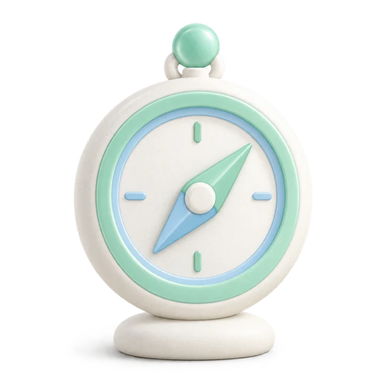
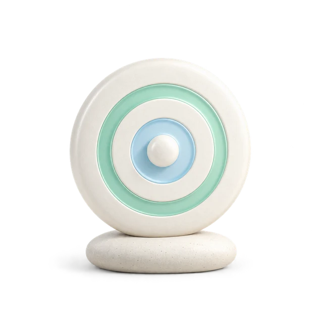

Clean Style · 성인용 B · 2026-10-13
메인·진단·결과·채팅 구현 완료
독립 에이전트가 구현 계획과 실제 변경을 점검했습니다. 개별 투명 그림 10종, 8유형 연결표, 성인 전용 스타일, 작은 선 아이콘, 공유 미리보기와 설치 아이콘을 적용했습니다. 배포·커밋·푸시는 하지 않았습니다.
실행 중인 성인용 로컬 미리보기 · 출시 전 외부 확인 항목 · 생성 프롬프트
실제 화면
아래는 로컬 Chromium의 실제 화면 캡처입니다. 채팅 오류·응답·중단 검사는 모의 API 응답을 사용했으며 외부 AI 제공자 성공을 검증한 것은 아닙니다. 캡처는 프로젝트의 무시된 로컬 검증 폴더에 저장됩니다.


결과별 그림 8종
이미지 식별자는 기존 styleKey와 직접 연결됩니다. 원래 질문·채점·성향 설명·기록 데이터 형식은 유지했습니다. 유형마다 원문 강점·주의·팁 표시를 확인했고, 설명은 두 줄에 맞추려고 자르지 않습니다.


검증 결과
| 항목 | 실행 / 결과 |
|---|---|
| 타입 검사 | corepack pnpm exec tsc --noEmit --incremental false 통과 |
| 집중 자동 검사 | corepack pnpm exec vitest run … --maxWorkers=1 — 7개 파일, 72개 테스트 통과. 그림 연결·실제 파일, 제품 구성, 학생 API 경계, 기록, 성인 질문, 공유 메타데이터, 일터 존중 포함. |
| 성인 실제 화면 | 모바일 390×844, 데스크톱 1365×900. 메인 안내 닫기, 첫 문항·이전·이어하기, 15문항 완료·이름 입력, 8유형 그림·설명, 탭 방향키, 채팅 대표 상태, 가로 넘침 없음. |
| 실패 상태 | 객체 원형 속성인 constructor 결과 키는 잘못된 접근 안내. 초기 이미지 요청 실패도 기존 상징으로 대체하고 제목 유지. 무작위 키·객체 원형 이미지 조회는 자동 검사로 배제. |
| 공유 미리보기 | 대표 성인 유형의 실제 로컬 /api/og가 200 PNG와 올바른 그림·이름을 출력. 실제 Worker 8유형 검사는 출시 QA에 pending. |
| plus | 기능 카드와 존중 진단 진입, 위기 결과의 제목·안내·색상 유지 확인. 검증에 필요한 존중 파일럿 플래그를 해당 로컬 서버에서만 켰습니다. |
| 학생 | 성인 테마 클래스·그림·AI 버튼 없음, 기존 설치 아이콘 경로 유지. 진행 중인 학생 소스 작업은 편집하지 않았습니다. |
| 시각 검사 | 생성 투명도 10종 확인, 본문/보조 글자/버튼 대비 점검, Impeccable 기계 검사 지적 없음. 실제 작은 그림의 실루엣과 대표 화면을 육안 확인. |
변경 범위와 색상 변경
- 전용 스타일:
src/products/adult/styles.css, 성인.adult-experience범위. 기존src/styles/globals.css는 건드리지 않았습니다. - 성인 브라우저·설치 아이콘 색:
src/products/adult/theme.ts. 기본색을 바꾸면 전용 스타일의 primary 값과 함께 맞추고node scripts/generate-adult-icons.mjs로 정적 아이콘을 갱신합니다. - 최종 그림:
public/images/adult-integrity/— 투명 WebP 10개, 공유용 PNG 8개, 합계 약 0.8 MB. 원본 PNG는artifacts/adult-design/originals/에 보관했습니다. - 그림 안의 민트·하늘색 픽셀은 CSS 색상 변경으로 바뀌지 않습니다. 다른 색 포인트가 필요하면 보관한 원본을 참고해 별도 변형을 제작합니다.
- 성인
/icons/adult/와 학생의 기존 경로를 분리했습니다. 실제 기존 설치 앱의 v5→v6 업데이트는 출시 QA에서 확인합니다.
2026-10-14 · 결과 화면 후속 조정
상단 뒤로 가기와 ‘진단 결과’ 제목을 없애고 결과 카드 오른쪽 위에 기존 공유 아이콘을 배치했습니다. 결과 화면에만 좌우 여백을 반응형으로 조절하고, 짧은 폰에서는 그래프·간격을 줄이며 긴 폰에서는 그림·설명 영역에 여유를 되돌립니다. 원문 강점·주의·팁과 하단 버튼은 유지합니다. 본문을 숨기거나 스크롤을 강제로 차단하지 않습니다.
에이전트가 찾은 응답 없는 링크의 잘못된 그래프는 완전한 성인 응답 검증으로 방지했습니다. 링크 복사 실패는 접근 가능한 상태 안내로 표시합니다. 결과 키·이름·공유 URL·학생 기능 경계는 유지합니다.
| 검증 | 증거 |
|---|---|
| 반응형 실제 화면 | 320×640, 390×700, 390×844, 데스크톱 1280×900. 33개 유형·탭·크기 조합에서 원문 유지. 390×700은 8유형의 3개 탭 모두 확인. 확인한 크기에서는 페이지 또는 앱 프레임 내부 추가 스크롤과 그래프 축 레이블 잘림 없음. 긴 이름·키보드·공유 성공/실패·AI 입력 진입·응답 없는 링크·잘못된 유형도 별도 확인. artifacts/adult-design/result-layout-confirm/evidence.json 및 assertions.json. |
| 자동 검사 | corepack pnpm exec vitest run src/__tests__/adult-result-answers.test.ts src/__tests__/adult-artwork.test.ts src/__tests__/questions.test.ts src/__tests__/student-route-boundaries.test.ts — 27개 통과. corepack pnpm exec tsc --noEmit --incremental false 통과. 최종 변경 파일 디자인 기계 검사 지적 없음. |
추가 사용자 요청에 따라 결과가 앱의 사용 가능한 높이를 채우고 그래프 영역이 남는 공간을 활용하도록 조정했습니다. 해석과 하단 버튼은 아래쪽에 배치되며, 상단 카드에는 옅은 민트→하늘색 그라데이션을 사용합니다. 최종 33개 조합 검사는 실제 그래프의 6개 축 이름·점수 12개 표시까지 확인합니다. 390×844의 하단 버튼 끝은 828px, 390×700은 684px, 320×640은 624px로 각각 아래 여백 16px를 유지했고 추가 스크롤이 없었습니다. 그래프 내부 크기는 Recharts에 명시적인 기준 높이를 제공하여 반응형 높이 계산 중 그림이 사라지지 않도록 했습니다.
긴 폰 결과 화면 · 짧은 폰 결과 화면. 이 검증은 현재 기존 그림 기준이며, C 개별 그림 적용과 실제 배포는 별도 후속 단계입니다.


2026-10-14 · 무늬·대칭 여백·채팅 제어 복원
사용자 설명에 맞춰 상단의 색상 그라데이션을 1px 세로선의 은은한 무늬로 바꿨습니다. 결과 화면 위아래 여백은 같은 16px 기준이며 안전 영역이 있으면 양쪽에 동일한 값을 적용합니다. 데스크톱 앱 프레임도 세로 중앙에 배치합니다. 최신 33개 화면 조합에서 그래프의 6개 축·점수 12개와 스크롤 없는 배치를 확인했습니다.
채팅 시작·대기 그림을 제거했습니다. 이전 채팅 공통 컴포넌트 통합 커밋 808c29d에서 빠진 10회 제한 안내·제어를 복원했습니다. 9회 완료→마지막 1회 안내→10회 완료→새 대화 시작을 표시하며 요청 훅도 추가 전송을 차단합니다. 기존 기록은 닫기·다시 열기에서 유지되고 사용자가 새 대화를 눌러야 채팅만 초기화합니다. 오류·중단은 완료 횟수로 계산하지 않습니다. 일정 기간에 따른 자동 초기화는 추가하지 않았고 일터 존중의 별도 대화 정책은 유지합니다.
에이전트 경계 검토와 모의 응답 브라우저 확인: 기존·대기·새 대화 이미지 없음, 9→10회 및 명시적 초기화, 진단 응답 보존 확인. 증거: artifacts/adult-design/chat-boundary-check/evidence.json. corepack pnpm exec vitest run src/__tests__/history.test.ts src/__tests__/respect-advice-route.test.ts src/__tests__/student-route-boundaries.test.ts — 14개 통과. 타입 검사와 변경 UI 파일의 기계 검사 통과. 오류 화면 당시 로그는 공급자 연결 실패였으며 현재 로컬 /api/chat 실제 호출은 HTTP 200, 67개 본문 이벤트 및 정상 완료였습니다. 증거: artifacts/ai-local-route-check.json. 배포는 실행하지 않았습니다.
2026-10-14 · 대화 한도 20회 확장
사용자의 추가 10회 요청에 따라 성인 청렴 조언 한도를 초회 포함 20회(질문·답변 메시지 40개)로 확장했습니다. 기존 4회마다 요약, 1분당 5회 요청 제한, 일터 존중의 별도 정책은 유지합니다. 기존 10회 대화를 삭제하지 않고 계속 이어갈 수 있습니다. 19회 완료 후 마지막 1회 안내, 20회 완료 후 새 대화 시작을 표시합니다. artifacts/adult-design/chat-boundary-check-20/evidence.json에서 19→20회·기록 보존·명시적 초기화·진단 결과 보존을 모의 응답으로 확인했습니다. corepack pnpm exec vitest run src/__tests__/sanitize.test.ts src/__tests__/history.test.ts src/__tests__/student-route-boundaries.test.ts — 39개 통과. 타입 검사 통과.
2026-10-14 · 짧은 대화의 불필요한 요약 제거
후속 사용자 요청으로 고정 4회마다 요약하는 조건을 바꿨습니다. 현재는 미요약 메시지 8개 이상과 미요약 글자 수 8,000자 이상을 모두 만족해야 요약합니다. 짧은 대화는 20회 한도 내에서 원문으로 이어가며, 완료 한도에서 불필요한 요약은 실행하지 않습니다. 길이 조건은 요금 토큰 추정치가 아닌 간단한 글자 수 기준입니다. 이후 요약은 이전 요약과 미요약 구간 전체를 보내어, 늦어진 요약 사이에 대화가 빠지지 않게 합니다. 취소된 요약의 상태 반영을 차단하고 새 답변 완료 시 최신 요약 위치로 정책을 검사합니다.
에이전트의 비동기 경계 검토를 반영했습니다. corepack pnpm exec vitest run src/__tests__/chat-summary-policy.test.ts src/__tests__/history.test.ts src/__tests__/student-route-boundaries.test.ts — 8개 통과. 타입 검사 통과. 실제 UI의 모의 응답 검증에서 짧은 20회 대화의 요약 요청은 0회였고, 긴 대화는 첫 8개 메시지 요약 후 추가 10개 메시지가 길이 기준을 넘었을 때만 두 번째 요약을 요청했습니다. 기존 요약과 첫 미요약 메시지 보존 확인. 증거: artifacts/adult-design/chat-boundary-check-20/evidence.json, artifacts/adult-design/chat-summary-check.json.
2026-10-14 · OpenAI Luna 직접 연결
사용자 승인으로 BioHub 기존 키를 Clean Style의 .env.local에 OPENAI_API_KEY로 연결했습니다. BioHub의 제공사 주소·모델 매핑을 참고하여 채팅·요약·일터 존중 조언을 https://api.openai.com/v1/chat/completions의 gpt-6-luna 직접 호출로 변경했습니다. OpenRouter·NVIDIA·Grok 대체 호출은 제거했습니다. 출력 한도는 max_completion_tokens, 추론 설정은 reasoning_effort: none을 사용하며 기존 화면의 스트리밍 전달·취소 형식은 유지합니다. 학생 AI 차단과 수동 배포 정책은 유지됩니다.
독립 에이전트가 런타임·세 API 경로·기본/Plus 워크플로·학생 경계를 읽기 전용 점검했습니다. corepack pnpm exec vitest run src/__tests__/ai-model-order.test.ts src/__tests__/runtime-env.test.ts src/__tests__/respect-advice-route.test.ts src/__tests__/student-route-boundaries.test.ts — 19개 통과. corepack pnpm exec tsc --noEmit --incremental false 통과. 실제 일반·스트리밍 직접 호출 모두 HTTP 200, 반환 모델 gpt-6-luna, 스트리밍 32개 본문 이벤트와 완료 확인. 로컬 /api/chat HTTP 200, 57개 본문 이벤트와 완료 확인. 증거: artifacts/ai-openai-smoke.json, artifacts/ai-local-route-check.json. 키를 출력하거나 Git에 추가하지 않았습니다.
배포 소스의 키 이름도 OpenAI로 맞췄습니다. GitHub Secrets 등록이나 외부 배포는 수행하지 않았습니다. 실제 Worker 모델 접근, Plus AI 사후 검사 보완, 학생 공통 비밀값 선언의 적용 범위는 출시 전 확인 문서와 TODO에 기록했습니다.
2026-10-14 · 상단 곡선 무늬 비교 시안
기존 C 선화 방향의 방패와 결과 카드에 세 가지 곡선 무늬를 비교했습니다. A는 사선 곡선 띠, B는 겹겹의 파동, C는 부드러운 리본입니다. 배경 선택 전 비교용이며 웹사이트에 적용하지 않았습니다. 저장 위치: design-concepts/header-patterns-2026-10-14/, 생성 지시문: prompts.json.


2026-10-14 · 결과 카드 배경만 조정
사용자의 후속 요청에 따라 전체 세로줄을 제거하고 카드 오른쪽 55% 영역에만 매우 옅은 사선 곡선 띠를 적용했습니다. 장식은 public/images/adult-integrity/result-wave-pattern.svg의 넓은 띠와 가는 보조 선으로 구성됩니다. 결과 그림·문구·공유 버튼·카드 크기·여백은 유지했습니다. 390×700 및 1280×900에서 변경 전후 주요 요소의 위치·크기가 일치했고, 320×640·390×844를 포함한 네 화면 크기에서 추가 스크롤이 없음을 확인했습니다. 모바일·데스크톱 실제 캡처를 확인했으며 Impeccable 변경 파일 검사에서 항목이 나오지 않았습니다. 증거: artifacts/adult-design/result-background-after/evidence.json.
2026-10-14 · 메인 정리와 선택한 2D 해초 적용
사용자가 선택한 2번 해초를 public/images/adult-integrity/question-seaweed-2d.png로 적용했습니다. 일반 화면에서 48×68px, 높이 720px 이하에서 34×48px로 작게 표시합니다. 마지막 선택지 아래 14px를 기본으로 하고 남는 높이에 따라 최대 12px까지 빈 가장자리와 겹칠 수 있습니다. 실제 글자의 위치를 검사해 가림이 발생하거나 화면 안에 들어가지 못하면 숨깁니다. 선택지 위치·크기·문구와 스크롤은 유지합니다. 이미지의 출처·생성 지시문은 design-concepts/question-seaweed-2026-10-14/에 보존되어 있습니다.
성인 메인 상단의 Clean Style 텍스트·아이콘과 어색한 소개 문구를 제거하고 제목을 중앙 정렬했습니다. 기본 메인 그림은 높이 238→198px(좁은 화면 214→174px), Plus 그림은 125→110px로 줄였습니다. 테스트 시작·정보 안내·기록과 학생 화면의 기능은 변경하지 않았습니다. Windows에서 corepack pnpm exec tsc --noEmit --incremental false 통과, Impeccable 변경 파일 검사 항목 없음. 390×844·390×700·320×640·1280×900에서 메인 및 첫 문항·문구가 긴 12번 문항을 확인했습니다. 증거: artifacts/adult-design/home-seaweed-after/evidence.json.
2026-10-14 · 청렴 AI 프롬프트와 호출 흐름 점검
검토 전용으로 청렴 채팅의 프롬프트·질문 분류·스타일/점수 전달·요약 입력을 점검했습니다. 운영 코드·모델·프롬프트는 수정하지 않았습니다. 기존 실제 Luna 5응답 시뮬레이션을 재사용하고 혼합 질문의 분류 함수를 실행했습니다. 외부강의 및 금품 수수 조건은 공식 안내와 대조했으며 전체 법률 정확성, 기관별 내부 규정, 모든 유형의 응답을 검증한 것은 아닙니다.
| 우선순위 / 상태 | 확인된 내용과 후속 작업 |
|---|---|
| 높음 · TODO 등록 | 외부강의 학교·언론 총액 150만원 지시가 공식 안내와 다르고 해당 과학기술분야 출연연 대상 기준이 누락됩니다. 단순 처벌 문구도 회계연도 합산·직무관련성·예외를 구분해야 합니다. 권익위 외부강의 안내, 법제처 금품 수수 설명. |
| 중간 · 실제 재현 | 인사 뒤 첫 상담의 스타일 소개 누락. 기존 TODO 항목 유지. 실제 답변: artifacts/chat-style-simulation-2026-10-14/report.html. |
| 중간 · 함수 실행 재현 | “내 스타일에 맞춰 연구비로 산 노트북을 개인 업무에 사용해도 되는지 조언해줘”가 style-info로 분류되어 실제 업무 상담보다 유형 설명을 우선합니다. |
| 중간 · 입력 누락 확인 | 요약 프롬프트는 유형명을 요구하지만 요약 API가 검증된 유형명을 실제 모델 입력에 넣지 않습니다. 대화에 유형명이 없는 경우의 실제 생성 결과는 미검증. 검증된 스타일 정보 입력 및 소개 여부의 독립 보존을 TODO로 등록했습니다. |
| 낮음 · 지시 상충 확인 | 필요할 때만 격려하라는 지시와 격려 필수 지시가 중복됩니다. 유형명 반복과 성향 맞춤 행동 조언의 경계, 사용자 동기를 단정하는 예시도 정리 대상입니다. |
성향 점수는 조언에 전달됩니다. 사용자 요약은 system 역할로 승격하지 않고 참고용 user 메시지로 전달하며 학생 AI 차단도 유지됩니다. corepack pnpm exec vitest run src/__tests__/chat-intent.test.ts src/__tests__/prompts.test.ts src/__tests__/student-route-boundaries.test.ts — 기존 10개 테스트 통과. 기존 프롬프트 테스트는 문구 존재만 검사하므로 법률 정확성이나 실제 상담 품질을 보장하지 않습니다. 수정 항목과 종료 조건은 TODO.md에 기록했습니다.
2026-10-14 · AI 수정 절차와 검증 범위 계획
사용자의 후속 질문에 따라 완료된 증거와 계획을 구분했습니다. 현재 실제 Luna 검증은 두 유형·한 업무 상황·인사·첫 상담·후속 상담의 5응답입니다. 기존 자동 검사 10개 및 혼합 질문 분류 재현도 확인했습니다. 8유형 전체, 요약 뒤 복원, 실패·취소·재시도, 법률 적용 대상별 실제 응답은 아직 충분히 검증하지 않았습니다.
법률은 권익위 안내에 더해 국가법령정보센터의 현행 2026-06-30 시행 개정문까지 대조했습니다. 전체 법률 검증 완료를 뜻하지 않습니다. 이후 수정 시 확인한 법률의 출처·확인일·시행일·적용 대상을 명시하고, 과거 사례의 시점 및 기관 내부 규정은 구분합니다.
| 변경 순서 | 구체적인 방향 |
|---|---|
| 1 · 법률 참고자료 | 잘못된 한도 및 누락된 적용 조건 정정. 대상이나 발생 시점이 불명확하면 필요한 사실을 확인하고 금액을 임의로 단정하지 않도록 지시. |
| 2 · 첫 실제 상담 | 이전 메시지 개수와 독립된 상담 소개 상태를 관리. 정상 완료 후에만 상태를 반영하고 요약·재접속에서도 보존. 실패·취소·재시도와 명시적 새 대화의 상태를 구분. |
| 3 · 질문 분류·프롬프트 | 스타일 표현을 포함한 업무 질문은 상담을 우선. 순수 유형 질문은 설명 유지. 첫 상담에서 정확한 유형명을 한 번 소개하고 후속에서는 행동 조언에 집중. 사용자가 유형 자체를 다시 물으면 설명 가능. 불필요한 격려 중복과 사용자 동기 단정 예시 정리. |
| 4 · 요약 정보 | 서버가 검증한 유형명·성향 정보를 명시적으로 제공하며 대화에서 추측하지 않도록 함. 소개 상태는 생성된 요약 문장에만 의존하지 않음. |
| 5 · 검증 | 8유형의 이름·점수 연결, 직접 상담, 인사 후 첫 상담, 혼합 질문, 유형 설명, 후속 상담, 요약·복원, 실패·중단·재시도·새 대화 및 기존 20회 경계는 집중 자동 검사로 확인. 실제 Luna는 대표 유형·경계 대화·법률 적용 대상/시점 예시를 선별 대조. 결과와 남은 한계를 기록. |
이는 변경·검증 계획이며 아직 위 수정이나 확대 검증을 실행한 것은 아닙니다. 프롬프트 문구 존재를 검사하는 것과 실제 응답의 품질·법률 정확성을 검증하는 것을 구분합니다.
2026-10-14 · 법령 조회·갱신 정책과 기존 프로젝트 참고
사용자가 지목한 D:\Projects\scientific-name-validator를 읽기 전용 확인했습니다. lib/law-api-client.ts는 LAW_GO_KR_API_KEY 기반 공식 DRF API 호출·시행일 조회·타임아웃·재시도·인증값 로그 마스킹을 제공합니다. 현재 법적종 갱신은 .github/workflows/legal-species-sync.yml의 주간 스케줄(한국시간 월요일 07:40)과 수동 실행으로 구성되며, scripts/legal-species-sync/check-law-version-changes.ts에서 식별값/날짜와 원천 내용 해시를 별도로 비교합니다. 옛 scripts/law-amendment-check는 폐기된 경로이므로 재사용하지 않습니다. 실제 운영 성공·인증값·승인 상태를 이번에 확인한 것은 아니며 타 프로젝트 코드나 설정은 변경하지 않았습니다.
Clean Style에는 아직 공식 법령 조회와 갱신 정책이 구현되지 않았습니다. 추천 초기 정책은 아래와 같습니다. 실제 도입 전 API 연결 및 호출량·응답시간을 검증하고 확정합니다.
| 판단 시점 | 제안 정책 |
|---|---|
| 조회 여부 | 허용 여부·금액 한도·법적 의무·제재를 묻거나 이전 상담 맥락상 법적 판단이 필요한 질문은 조회. 인사·단순 유형 설명은 생략. 불명확하면 조회 또는 적용 사실 확인 쪽으로 처리. AI가 관련 법령 후보를 제안하더라도 근거 없이 법적 결론을 생성하지 않도록 서버에서 응답 조건을 관리. |
| 법률 질문마다 | 관련 법령의 공식 현행(시행일 기준) 목록에서 식별값·공포일·시행일·상태를 다시 확인. 변경을 미리 안다고 가정하지 않음. 시행 예정과 현재 시행 중인 법령을 구분하며 과거 사건은 해당 시점의 버전을 선택. |
| 저장 원문 재사용 | 현재 버전과 일치하는 원문만 재사용. 버전이 달라지면 본문·관련 부칙·별표를 즉시 다시 조회. 같은 버전의 내용 정정도 놓치지 않도록 원문 저장 후 1시간이 지나면 재조회하는 안을 제안. 1시간은 공식 규칙이 아닌 제품의 초기 운영값. |
| 강제 원문 재조회 | 사용자가 최신 여부를 명시적으로 요청하거나, 시행일을 넘었거나, 저장 자료가 없거나 파싱 오류·수정 의심이 있으면 시간 제한 전에도 재조회. |
| 조회 실패 | 마지막 정상 조회 시각·저장 자료의 시행일은 확인하되 최신이라고 표시하지 않음. 현재 기준을 확인하지 못한 숫자·허용 여부를 단정하지 않고 확인 가능한 일반 실천 조언 또는 추가 확인 안내만 제공. |
공식 API의 시행일 목록은 현행·시행예정·연혁 구분을 제공하며 본문에는 조문·별표 시행일도 포함됩니다. 참고: 시행일 목록, 시행일 본문. 서비스가 조회한 시점 이후의 변경과 원천 반영 지연까지 즉시 보장하는 것은 아닙니다. 주간 종 목록 동기화의 주기를 청렴 상담에 그대로 적용하지 않습니다.
2026-10-14 · 캐시 비용·최신성 에이전트 검토
사용자의 계획 전용 지시에 따라 제품 변경 없이 두 독립 에이전트가 비용·캐시와 최신성·실패 조건을 나눠 검토했습니다. 공식 법령 목록·본문은 공공데이터포털에서 무료로 명시하지만 이용 제한과 Worker·저장소·Luna 입력 비용은 구분해야 합니다. 매 답변별 공식 목록 호출 대신 유효한 버전 확인 캐시를 재사용하는 방향을 추가했습니다. 초기 후보는 버전 15분/원문 1시간이며 확정값이 아닙니다. 명시적 최신 요청·시행 경계·버전 변경 시 재확인, 성공/실패 시각 구분, 완결된 자료 묶음, 만료 자료의 법적 결론 제한, 버전 고정 출처와 최소 근거 입력을 보완했습니다. 현재 계획의 기준 문서는 AI 법령 근거 연결 계획서입니다. 이 절의 이전 조회 정책은 검토 전 초안 이력으로 보존합니다. 구현·실제 캐시 시험·새 인증 등록·배포는 수행하지 않았습니다.
실행 기록
| 제품 | 명령 / 디렉터리 / 로그 / 상태 |
|---|---|
| 성인 default | corepack pnpm dev --hostname 127.0.0.1 --port 3027D:\Projects\Clean_style · artifacts/dev-server/3027/ · 미리보기 유지 |
| plus / 학생 | 같은 명령 형식으로 3029 / 3028 포트, 같은 작업 디렉터리. 로그 artifacts/dev-server/3029/, artifacts/dev-server/3028/. 소유 PID 확인 후 검증 서버 종료. |
Windows 실행. COREPACK_HOME 및 테스트 TEMP/TMP는 프로젝트 artifacts/tool-cache/로 제한했고 정확한 설정은 AGENTS.md에 기록했습니다. Next.js가 추가한 검증용 tsconfig include는 작업 전 목록으로 복원했습니다. 전체 Cloudflare 빌드나 배포는 실행하지 않았습니다.